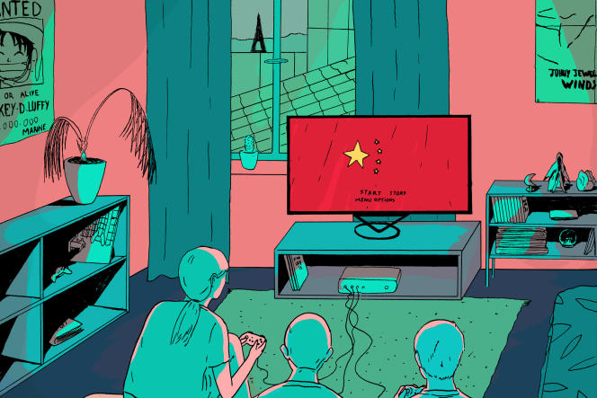

Jeux vidéo, cinéma, médias, réseaux sociaux : comment la Chine étend sa censure en Occident
Les censeurs de Pékin ont accru leurs exigences depuis l’arrivée au pouvoir de Xi Jinping. Et trouvent du répondant dans de nombreuses firmes occidentales.
Par Damien Leloup et Martin Untersinger
Publié le 10 novembre 2019 à 15h13 Mis à jour le 11 novembre 2019 à 10h11 Temps deLecture 10 min.

La censure culturelle opérée par la Chine, longtemps tournée prioritairement vers les citoyens du pays, déborde de plus en plus en Occident. XAVIER LISSILLOUR
C’est un exemple récent parmi des dizaines d’autres. Le 8 octobre, Blizzard, l’éditeur américain de jeux vidéo à l’origine du très populaire Hearthstone, a annoncé avoir sanctionné Chung Ng Wai, un joueur professionnel, pour avoir affiché son soutien aux manifestants hongkongais dans une interview.
Blizzard lui a interdit alors toute participation à un tournoi de Hearthstone pendant un an, et a même voulu renoncer à lui verser la somme qu’il avait gagnée lors du tournoi, estimant que le joueur avait enfreint les règles interdisant aux joueurs de ses compétitions de faire de la politique. Devant la bronca, le président de Blizzard a réduit la suspension de six mois et a accepté qu’il reçoive sa récompense.
Il s’est, ce faisant, défendu dans un communiqué de toute sympathie prochinoise :
« Les opinions de [Chung Ng Wai] n’ont joué aucun rôle dans notre décision. Je veux être clair : nos relations avec la Chine n’ont eu aucune influence. »
Censurer en Occident
Les exemples sont multiples : la censure culturelle opérée par la Chine, longtemps tournée prioritairement vers les citoyens du pays, déborde de plus en plus en Occident. « Quand la Chine était centrée sur son développement interne, la logique du Parti communiste était de contrôler l’information au sein de ses frontières. Aujourd’hui, la Chine est devenue un acteur international majeur, une superpuissance qui veut avoir une présence internationale, et qui cherche donc à contrôler ce qui est dit du gouvernement partout dans le monde », détaille Cédric Alviani, directeur du bureau Asie de l’Est de Reporters sans frontières (RSF).